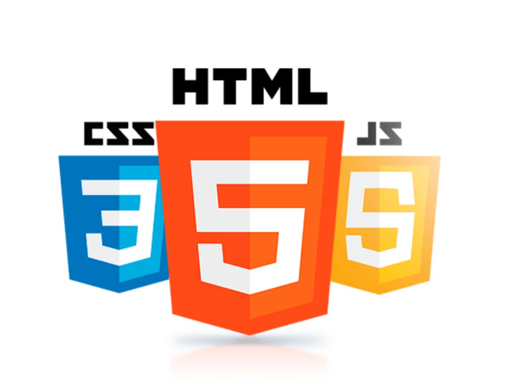
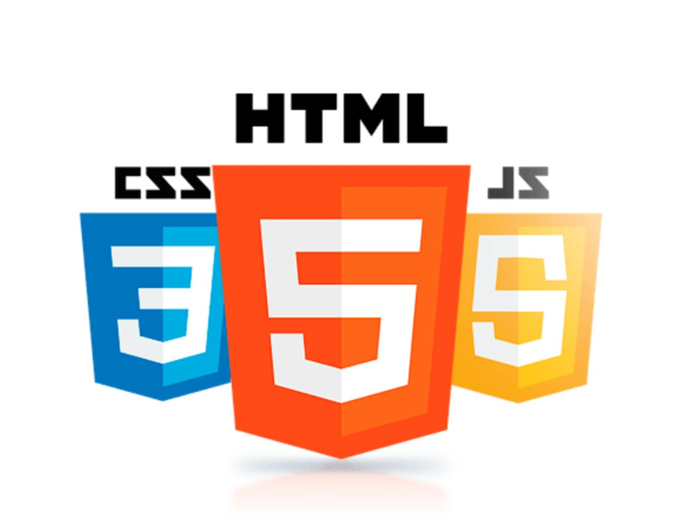

Que es javaScript
Es un lenguaje de programación web comúnmente usado en HTML para controlar la lógica y el comportamiento.
Se puede usar para desarrollos frontend y backend (navegador y servidor)
Es un lenguaje de programación web comúnmente usado en HTML para controlar la lógica y el comportamiento.
Se puede usar para desarrollos frontend y backend (navegador y servidor)